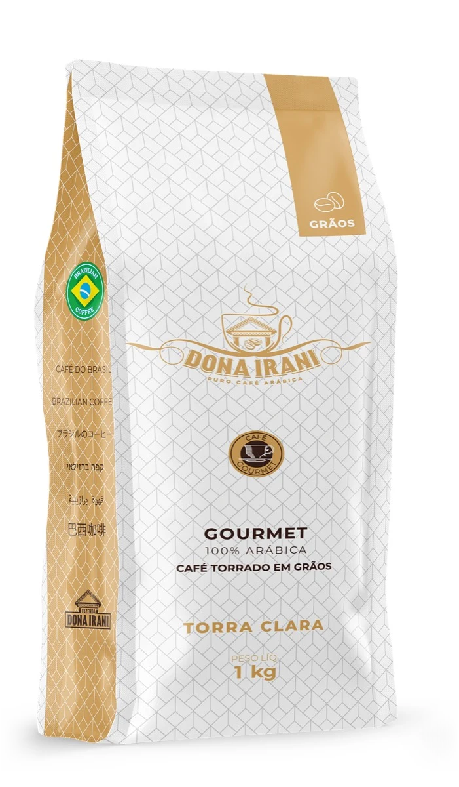

Gourmet
Granos · 1 kg
Lo mejor de cada cosecha
Los granos cereza de mejor puntaje, separados lote por lote. Molelo al momento para conservar todo su aroma.

- Notas
- Chocolate y nuez
- Nota ABIC (0–10)
- 7,3–10 / 10
- Origen
- Fazenda Dona Irani, Gália (SP), Brasil.
- Variedad
- 100% Arábica Mundo Novo, de cosecha selectiva.
- Tueste
- Claro
- Ideal para
- V60, Chemex, espresso o prensa francesa.
- Perfil
- Cuerpo sedoso, dulzor natural, notas a chocolate y nuez.